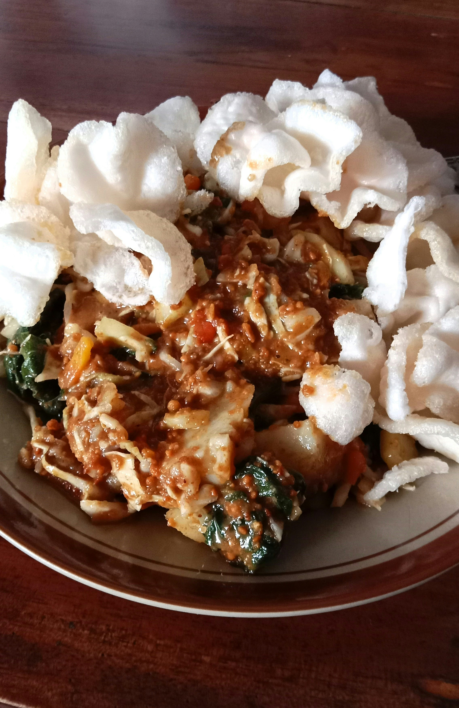

Gado Gado

Description
An Indonesian staple and easy to make than it looks.
Ingredients
- Peanuts
- Galangal or ginger
- Rice noodles
- Cilantro
Steps
- Cook rice noodles until al dente
- Crush peanuts and galangal in dish to create a paste
- Combine cooked noodles and savory mixture